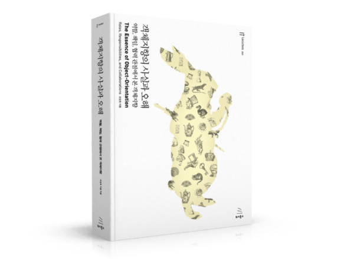

*파트너스 활동을 통해 일정액의 수수료를 제공받을 수 있음
이 책은 객체지향 설계의 본질을 깊이 있는 철학적 접근과 현실적인 사례를 통해 설득력 있게 전달한다. 특히 시니어 엔지니어 관점에서 보았을 때, 객체지향을 단순히 프로그래밍 언어나 기술적 기교로 이해하는 것이 아니라, 협력과 책임이라는 인간 사회의 본질과 닮은 개념을 중심으로 접근하는 방법론이 인상적이다.
Image 1
개념과 설계를 명세와 구현과 명확히 구분하여 설계를 진행하는 접근은 실제 업무에서 유지보수성과 변경 대응 능력을 극대화하는 실질적인 가이드를 제공한다. 특히, 책임 주도 설계와 메시지 중심의 접근 방식은 팀 내 코드 리뷰와 아키텍처 설계에 직접적으로 활용 가능한 가치 있는 통찰을 제공한다.
한편, 객체지향을 과도하게 기술적이고 복잡한 개념으로 설명하지 않고, 비유와 은유를 통해 쉽게 이해할 수 있도록 구성한 점이 돋보였다. 이를 통해 팀원과 소통할 때 객체지향의 본질을 쉽게 전달하고 설계 의도를 명확히 공유할 수 있게 된다.
결론적으로 이 책은 시니어 엔지니어들이 실무에서 객체지향 설계의 원칙을 보다 명료하게 이해하고, 코드의 품질과 협력적 설계를 높이는 데 큰 도움을 줄 수 있는 필독서라 평가할 수 있다. 객체지향을 처음 접하는 초급자뿐 아니라 설계에 숙련된 개발자에게도 지속적으로 참고할 가치가 있는 뛰어난 지침서이다.
1장. 협력하는 객체들의 공동체
객체지향 설계는 자율적인 객체들이 서로 협력하여 문제를 해결하는 방식을 강조한다. 협력은 객체가 메시지를 주고받는 과정을 통해 이루어진다. 예를 들어, 카페에서 커피를 주문할 때, 고객 객체가 주문 메시지를 보내면 캐셔 객체는 이를 수신하고 주문 내용을 기록한 후, 바리스타 객체에게 제조 요청 메시지를 전달한다. 바리스타 객체는 요청받은 커피를 제조하고, 제조 완료 메시지를 캐셔에게 전송한다. 캐셔는 다시 고객에게 완성된 커피를 전달한다. 이러한 과정은 각 객체가 맡은 역할과 책임을 명확히 하고 메시지 교환을 통해 유기적으로 협력함을 보여준다.
“객체는 협력의 요청과 응답을 통해 전체 시스템의 목표를 달성한다. 각 객체는 자율성을 가지고 있어 어떤 방식으로 요청을 처리할지 스스로 결정한다.”
2장. 이상한 나라의 객체
객체는 상태(속성), 행동(메서드), 식별자를 가진 자율적 존재로, 행동이 상태를 변화시킨다. 이 개념은 루이스 캐럴의 『이상한 나라의 앨리스』를 통해 설명된다. 앨리스라는 객체는 특정 상태(예: 키, 몸 크기)를 가지고 있으며, 어떤 행동(예: 먹기, 마시기)을 수행할 때 상태가 변한다. 이 비유는 객체가 스스로 결정하고 상태를 관리하는 자율적 존재임을 강조하며, 객체 설계 시 상태와 행동이 유기적으로 연결되어야 한다고 주장한다.
객체를 상태(state), 행동(behavior), 식별자(identity)를 지닌 실체로 보는 것이 가장 효과적이다.
“객체의 상태는 그 객체가 수행하는 행동의 결과물이다. 행동은 객체를 정의하고, 객체의 본질적인 특성을 드러낸다.”
3장. 타입과 추상화
추상화는 복잡한 현실을 간단한 개념으로 정의하여 관리할 수 있게 하는 기법이다. 예를 들어 카드게임의 ‘트럼프 카드’는 다양한 개별 카드를 공통적인 속성과 행동을 가진 하나의 타입으로 묶어 관리할 수 있게 한다. 객체를 타입으로 추상화하면 각 객체의 역할과 책임을 더 명확히 정의하고, 공통된 인터페이스를 통해 협력 관계를 명료하게 만들 수 있다. 일반화와 특수화를 통해 타입 간의 계층적 구조를 만들고, 이를 통해 시스템의 복잡성을 줄일 수 있다.
추상화
어떤 양상, 세부 사항, 구조를 좀 더 명확하게 이해하기 위해 특정 절차나 물체를 의도적으로 생략하거
나 감춤으로써 복잡도를 극복하는 방법이다.
복잡성을 다루기 위해 추상화는 두 차원에서 이뤄진다[Kramer 2007]
- 첫 번째 차원은 구체적인 사물들 간의 공통점은 취하고 차이점은 버리는 일반화를 통해 단순하게
만드는 것이다. - 두 번째 차원은 중요한 부분을 강조하기 위해 불필요한 세부 사항을 제거함으로써 단순하게 만드
는 것이다.
모든 경우에 추상화의 목적은 복잡성을 이해하기 쉬운 수준으로 단순화하는 것이라는 점을 기억하라.
“타입은 객체를 분류하고 공통적인 행동을 정의하는 추상화 도구다. 일반화와 특수화를 통해 객체 간의 계층적 관계를 명확히 한다.”
4장. 역할, 책임, 협력
객체는 역할과 책임을 수행하면서 협력한다. 예시로 법정 재판을 보면, 판사, 변호사, 피고인, 증인은 각각 역할과 책임이 명확하게 정의되어 있다. 판사는 판결의 책임을 지고, 증인은 진술의 책임을 맡는다. 객체 설계에서도 명확한 역할과 책임을 할당하면 객체의 협력이 자연스럽게 이루어진다. 책임은 행위적 책임과 정보적 책임으로 나뉘며, 이를 명확히 정의하는 것이 객체 간 협력을 원활히 만드는 핵심이다.
- 하는 것(doing)
- 객체를 생성하거나 계산을 하는 등의 스스로 하는 것
- 다른 객체의 행동을 시작시키는 것
- 다른 객체의 활동을 제어하고 조절하는 것
- 아는 것(knowing)
- 개인적인 정보에 관해 아는 것
- 관련된 객체에 관해 아는 것
- 자신이 유도하거나 계산할 수 있는 것에 관해 아는 것
“책임을 명확히 정의하고 역할을 통해 객체 간 협력을 설계하면 유연성과 재사용성이 높은 시스템을 구축할 수 있다.”
5장. 책임과 메시지
메시지는 객체 간 협력을 위한 요청이며, 객체는 메시지를 수신하여 자신만의 방법으로 응답한다. 레스토랑에서 웨이터가 주문을 주방에 전달하는 것이 메시지 전달의 예다. 메시지를 받은 주방장은 자신만의 방식으로 음식을 조리한다(메서드). 이 과정에서 메시지의 인터페이스와 구현을 명확히 분리하여 객체의 자율성을 높이고 결합도를 낮춘다. 인터페이스는 객체가 무엇을 수행할지를 정의하고, 구현은 그 수행 방법을 정의한다.
객체지향 프로그래밍에서 행동은 수행할 책임을 지닌 객체에게 전송된 메시지에 의해 시작된다. 메시지는 행동에 대한 요청을 표현하고, 요청을 수행하는 데 필요한 추가적인 정보를 인자를 통해 전달한다.
수신자는 메시지를 수신하는 객체를 가리킨다. 수신자가 메시지를 받아들인다는 것은 해당 행동을 수행할 책임을 받아들인다는 것을 의미한다. 객체는 메시지에 대한 응답으로 요청을 만족하기 위한 어떤 메서드를 수행할 것이다
“메시지와 메서드를 명확히 분리함으로써 객체의 자율성을 보장하고 협력의 유연성을 높인다.”
6장. 객체 지도
객체 설계는 시스템의 구조(도메인 모델)와 기능(유스케이스)을 명확히 구분하여 설계해야 한다. 예를 들어 온라인 쇼핑몰의 도메인 모델(상품, 고객, 주문 등)은 시스템의 안정적인 구조를 나타내며, 유스케이스(장바구니 담기, 결제하기 등)는 시스템의 기능을 정의한다. 기능 변경이 발생하더라도 도메인 모델이 잘 설계되어 있다면 변경에 유연하게 대응할 수 있다.
“구조와 기능의 명확한 구분과 통합을 통해 시스템의 유지보수성과 변경 대응력을 향상시킬 수 있다.”
7장. 함께 모으기
설계를 구현할 때는 개념적 관점, 명세적 관점, 구현적 관점을 명확히 구분해야 한다. 카페 주문 시스템을 설계할 때, ‘커피’, ‘메뉴’와 같은 도메인의 개념을 정의하고, 객체 간의 협력을 위한 메시지와 인터페이스를 명세적으로 정의하며, 실제 코드로 책임을 구현한다. 이 세 가지 관점이 명확히 분리되고 잘 통합되면 변경사항에 유연히 대응할 수 있는 견고한 설계를 완성할 수 있다.
“개념, 명세, 구현의 세 가지 관점을 명확히 구분하여 설계하면 유지보수가 쉬운 시스템을 만들 수 있다.”
느낀점(와닿은 것들 & 생각나는 것들)
- 개발 처음에 배울때 배웠던 기초적인 내용들이 많이 생각났다.. 객체, 타입, 추상화, 다형성, 책임, 캡슐화, 은닉 ㅎㅎ
- 객체에서 중요한 것은 행동이다. 행동에 따라 객체의 타입이 결정된다.
- 디자인패턴과, 테스트도, 모든 객체는 그 객체의 책임으로 움직인다.
- 왕의 객체를 만들때 멋진 수염이나 근엄한 표정을 표햔하는 것 보다 죄를 판결할 수 있는 책임을 수행할 수 있는가? 가 중요하다는 대목이 있다. 소프트웨어를 만들때 우선 고려사항. 책임을 먼저 고려한다. 근데 이 세상을 살아갈때에도 누군가를 모방한다고 할때 겉모습이 아니라, 그 역할이나 책임을 모방해보는 것도 좋을 것 같다는 생각이 들었다. ㅎㅎ
- 묻지말고 시켜라
- 어떤 객체가 필요한지를 생각하지 말고 어떤 메시지가 필요한지를 먼저 고민하라고 조언
- 일단 메시지가 결정된 후에야 이 메시지
를 처리할 객체를 선택한다.
에피소드 처남이 UML 설계로 개발을 하는데 재미있는
논의할 점
- 인터페이스 구현 vs 바로 클래스 구현
- 인터페이스를 먼저 설계할 때 얻을 수 있는 이점은?
- 우리는 책임중심 설계와 가까운가? 아니면 데이터중심 설계와 가까운가?
- 앞으로 책임중심 설계로 나아가려면 주로 어떤것을 주로하여 변경해야할까?
테이블: orders (order_id, user_id, status, total_price)
→ 단순히 “주문 테이블”이 아니라, “주문 관리 객체” 가 “주문 생성”, “상태 변경” 책임을 가져야 한다고 본다.
(2) 데이터를 조작하는 메서드를 단순 CRUD가 아니라 책임 기반으로 바꾼다saveOrder(), updateOrderStatus() 같은 이름을
→ placeOrder(), confirmOrder(), cancelOrder() 처럼 행위 중심 이름으로 바꾼다.
- 앞으로 책임중심 설계로 나아가려면 주로 어떤것을 주로하여 변경해야할까?
(3) 객체 협력 흐름을 별도로 설계한다
- 데이터 모델 간 관계(Join, FK 등)만 보는 게 아니라,
- 어떤 객체가 어떤 객체에 **요청 메시지**를 보내는지 협력 흐름을 그린다.
예시
- Order 객체 → Payment 객체에게 requestPayment() 요청
- Payment 객체 → User 객체에게 checkCreditLimit() 요청
(4) 중요한 도메인 개념부터 책임 중심으로 옮긴다
- 모든 테이블을 한 번에 책임주도로 옮기려 하지 말고,
- 비즈니스 흐름 상 핵심인 부분부터 책임 중심 설계로 리팩터링한다.
예시
- 주문(Order) → 결제(Payment) → 배송(Delivery) 흐름부터 책임 설계 적용
- 회원(User)이나 알림(Notification) 같은 부수적 데이터는 나중에 처리
(5) “상태(데이터)”는 “책임”을 지원하기 위한 보조 수단으로 재배치한다
- "어떤 데이터가 필요해서" 필드를 추가하는 게 아니라,
- "이 책임을 수행하기 위해" 필요한 최소한의 상태만 남긴다.
예시
- 주문 객체는 total_price를 직접 저장하지 않고, 주문 항목들의 가격 합계를 계산하는 책임을 가질 수도 있다.
| 항목 | 책임주도 설계 (RDD) | 데이터주도 설계 (DDD) |
|---|---|---|
| 출발점 | 객체의 책임 | 데이터 구조 (속성) |
| 중심 사고 | “무엇을 해야 하는가” (행동 중심) | “어떤 데이터를 저장해야 하는가” (속성 중심) |
| 모델링 방법 | 객체가 가져야 할 책임을 먼저 식별하고, 필요한 상태(데이터)는 나중에 결정 | 저장해야 할 데이터(필드)를 먼저 정의하고, 그에 따라 메서드를 추가 |
| 협력 설계 | 객체 간 협력(메시지 교환)을 먼저 설계 | 협력은 나중에 부차적으로 결정 |
| 장점 | 변화에 유연, 캡슐화가 잘됨, 메시지 중심의 강력한 설계 | 단순한 CRUD 기반 시스템에서는 구현이 빠르고 직관적임 |
| 단점 | 처음 설계가 익숙하지 않으면 어렵고 추상적일 수 있음 | 기능 변경/확장이 발생하면 구조가 쉽게 깨진다 (유연성 낮음) |
| 대표적인 예시 | 객체가 해야 할 행동(예: “주문을 접수한다”)을 먼저 정하고, 필요한 데이터는 그 책임을 수행하기 위해 최소한만 정의 | DB 테이블 구조(주문ID, 상품ID 등)를 먼저 만들고, 그 데이터 읽고 쓰는 메서드를 추가 |
1장. 협력하는 객체들의 공동체
협력하는 사람들 객체지향 설계의 핵심은 클래스나 상속이 아니라, 자율적인 객체들이 협력하는 것이다. 객체는 메시지를 주고받으며 서로의 책임을 수행하고 시스템의 기능을 완성한다.
요청과 응답으로 구성된 협력 협력은 단순 데이터 전달이 아니라 의미 있는 책임 이행이다. 예를 들어, 카페에서 커피를 주문할 때 손님, 캐셔, 바리스타가 각자의 역할을 수행하며 협력하는 과정이 객체 협력과 유사하다.
역할과 책임 객체는 상태와 행동을 함께 가지며, 외부 요청에 자율적으로 응답해야 한다. 협력의 품질은 객체의 책임 정의와 요청/응답 구조에 달려 있다.
협력 속에 사는 객체 시스템은 거대한 협력 네트워크로 볼 수 있으며, 개별 객체는 혼자서 기능을 완성할 수 없다. 협력을 중심으로 객체를 바라보는 것이 객체지향의 진정한 출발점이다.
객체를 상태(state), 행동(behavior), 식별자(identity)를 지닌 실체로 보는 것이 가장 효과적이다.
2장. 이상한 나라의 객체
객체, 그리고 이상한 나라 객체는 상태, 행동, 식별자를 지닌 자율적 존재로 정의된다. 객체의 행동이 상태를 결정하며, 상태는 객체의 현재를 설명한다.
기계로서의 객체 예를 들어 앨리스가 키를 키우거나 작아지게 하는 행동은 그녀의 상태 변화를 일으킨다. 객체는 단순 데이터 저장소가 아니라 능동적으로 행동하고 변화를 만들어내야 한다.
은유와 객체 ‘이상한 나라의 앨리스’처럼, 객체는 끊임없이 변화하고 상호작용한다. 객체는 현실 세계를 그대로 모방하지 않고, 목표에 맞는 새로운 세계를 창조하는 주체다.
이상한 나라를 창조하라 식별자는 객체의 동일성을 보장하여, 상태 변화에도 일관성을 유지하게 한다.
3장. 타입과 추상화
추상화를 통한 복잡성 극복 추상화는 복잡한 현실을 단순화하고, 시스템을 이해하기 쉽게 만드는 필수적인 방법이다.
객체지향과 추상화 객체지향에서는 객체의 공통 행동을 추상화하여 타입으로 관리한다. 예를 들어 트럼프 카드에서 모양은 다르지만 기본 동작은 같다.
개념과 타입 타입은 동적인 객체를 정적인 관점에서 표현하는 수단이다. 객체의 행동을 기준으로 타입이 결정된다.
타입 계층 슈퍼타입과 서브타입 관계를 정의하여 구조를 체계화하고, 유연한 설계를 가능하게 한다.
정적 모델과 동적 모델 실행 중 협력하는 객체들과, 설계 시 정의하는 타입 계층을 구분하여 관리해야 한다.
4장. 역할, 책임, 협력
협력 시스템은 여러 객체들이 협력하여 문제를 해결하는 공동체다.
책임 책임은 객체가 수행해야 할 행위나 정보를 의미하며, 시스템의 품질을 결정짓는다.
역할 역할은 협력 안에서 객체가 맡는 자리이며, 대체 가능성과 유연성을 제공한다.
협력의 추상화 협력 자체를 추상화하여 객체들이 유연하게 상호작용하도록 설계할 수 있다.
객체지향 설계 기법 책임-주도 설계와 디자인 패턴은 협력 중심 설계를 지원한다.
5장. 책임과 메시지
자율적인 책임 객체는 자신의 의지에 따라 메시지에 반응하고 책임을 수행해야 한다.
메시지와 메서드 메시지는 객체 간 협력을 가능하게 하며, 메서드는 메시지에 대한 구체적 응답 방법이다.
다형성과 유연한 협력 다형성은 송신자가 수신자의 구체적 타입을 몰라도 협력할 수 있도록 한다.
인터페이스와 구현의 분리 객체는 인터페이스를 통해 외부와 소통하고, 내부 구현은 숨겨야 한다.
캡슐화 캡슐화는 객체 자율성의 핵심 원칙으로, 내부 상태를 보호하고 일관성을 유지한다.
6장. 객체 지도
기능 설계 대 구조 설계 기능은 자주 변하지만, 구조는 오랫동안 안정적으로 유지되어야 한다.
도메인 모델 도메인 모델은 시스템의 안정적인 뼈대를 제공하는 중심 개념이다.
유스케이스 유스케이스는 사용자의 요구사항을 표현하며, 기능적 변화를 담는다.
구조와 기능의 통합 도메인 모델 위에 기능을 올려 변화에 유연하게 대응하는 설계가 필요하다.
변화에 강한 설계 안정적인 구조와 가변적인 기능을 균형 있게 조합해야 한다.